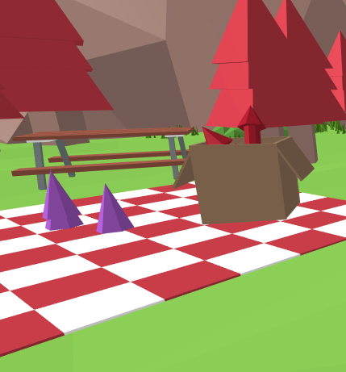

Timeline
November 2018 (10 weeks)
Role
Front End Development
Tools
A-Frame
HTML/CSS
JavaScript
Team
Izzy Vohsemer
Risi Zani
Google Doodle VR
Design, Experience
We were tasked with creating an interactive Google Doodle. Taking inspiration from doodles created by Google over the years, we decided to take it a step further and create an immersive, virtual reality experience celebrating the 50 years of VR.
Challenge Statement
How might we create an interactive Google Doodle to encourage a celebration of an event while still being accessible to everyone?
Research
About Google Doodles
A Google Doodle is a temporary alteration of the logo on Google’s homepage. It is usually an art piece designed to celebrate a person, an event, etc. Some doodles have been paintings, illustrations, animations, or videos. Recently, Google has been creating interactive doodles such as games.History of Virtual Reality
The first ever VR device was a sensorama, which was a big bulky machine that displayed wireframes. Currently, VR can be experiences using devices as small as a phone. Users can use it for anything ranging from immersive 3d models to full gameplay experiences.Solution
We created an in-browser interactive VR Google Doodle that is accessible on desktop and utilizes inexpensive headsets for mobile users.
Ideation
We decided to create a virtual reality experience celebrating the 50 year anniversary of VR. While we were asked to create a 2D Google Doodle, but we decided to create a 3D virtual reality experience in order to fully convey the meaning of virtual reality.
Virtual reality is one of the most innovative inventions of technology so far. It was only recently made accessible, VR has been around for a while! We decided to commemorate it’s 50th anniversary.
¬ Walkable environment
¬ Birthday party (for VR)
¬ Walkable wireframe environment (to show history of VR)
Virtual reality is one of the most innovative inventions of technology so far. It was only recently made accessible, VR has been around for a while! We decided to commemorate it’s 50th anniversary.
Conceptual Process
We brainstormed many ideas for the experience and we landed with the following:¬ Walkable environment
¬ Birthday party (for VR)
¬ Walkable wireframe environment (to show history of VR)
Development
Our biggest obstacle: we didn’t know how to create virtual reality experiences. Through hours of research and mentoring from an upper year IXD student, we found A-Frame.
While I was slightly familiar with JavaScript, A-Frame was almost like learning a whole new language, and the biggest challenges was finding out how to integrate JavaScript into the new framework. It took me days and countless tries in order to make the environment interactive. I tried many different techniques, which, most of them, failed.
Some users also reported accidentally teleporting because of the placement of the portals, and not knowing what to do in terms of interactivity. We fixed this by moving the portal a few units, as well as adding tool tips to help users understand the experience.
In the end, I couldn’t quite get the result I was hoping for due to it not being a function that is available or suitable for a mobile device. But I ended up recreating the effect in a simpler way without taking away the magic of VR.
About A-Frame
A-Frame is a JavaScript framework that simplifies and minimizes the code needed to create virtual reality experiences for web-based programs. While my team got to work on modelling the 3d environment, I started to explore and learn the new framework and create some test environments.While I was slightly familiar with JavaScript, A-Frame was almost like learning a whole new language, and the biggest challenges was finding out how to integrate JavaScript into the new framework. It took me days and countless tries in order to make the environment interactive. I tried many different techniques, which, most of them, failed.
User Testing
We performed our first user test after hitting our first milestone, which was importing the first draft of our 3d model with minor interactions. The first testers reported minor issues such as getting motion sick (due to the headset/immersive experience) and that some colours needed refinement, which we fixed in the second iteration.Some users also reported accidentally teleporting because of the placement of the portals, and not knowing what to do in terms of interactivity. We fixed this by moving the portal a few units, as well as adding tool tips to help users understand the experience.
In the end, I couldn’t quite get the result I was hoping for due to it not being a function that is available or suitable for a mobile device. But I ended up recreating the effect in a simpler way without taking away the magic of VR.

Final Product
We were celebrating an anniversary, so we wanted to show both the past and present of virtual reality in order to show how much it has come in the past 50 years of its existence. The final experience consisted of two scenes. The first scene is a wireframe environment on a Google landing page.
The second scene is a low-poly environment. It represents virtual reality's 50th birthday. There are models of VR goggles spread throughout the environment, which creates a fun experience for users on desktop.
To the right is a sensorama. This is a tribute to the first VR machine. There are two interactions attached to the sensorama. If the user gazes over, a text box with a brief description of the sensorama will appear. If the user approaches it, they will see a dark screen. After a few seconds of gazing into the sensorama, the user will be lead to the wireframe environment (representing what you would see if you looked into a real sensorama).
After many experiments, I found that when objects are imported separately from the scene, they can be called on as objects in JavaScript. Add an event listener here, and an effect there, and we got clickable objects!
The second scene is a low-poly environment. It represents virtual reality's 50th birthday. There are models of VR goggles spread throughout the environment, which creates a fun experience for users on desktop.
Interactions and Easter Eggs
 To the left is a small box of fireworks. After the user gazes at the firework for a few seconds, this will emit an effect which "launches" the fireworks and triggers an explosion. Gazing on the balloons on top of the text will trigger their explosion.To the right is a sensorama. This is a tribute to the first VR machine. There are two interactions attached to the sensorama. If the user gazes over, a text box with a brief description of the sensorama will appear. If the user approaches it, they will see a dark screen. After a few seconds of gazing into the sensorama, the user will be lead to the wireframe environment (representing what you would see if you looked into a real sensorama).
Challenges
My biggest breakthrough: clickable objects. One of the interactions I wanted to add to the environment was clickable objects. I spent hours reading the documentation, doing researching, and experimenting in order to get it working the way I wanted it to. I was an amateur coder with little JavaScript experience and no A-Frame experience, so it was quite a challenge.After many experiments, I found that when objects are imported separately from the scene, they can be called on as objects in JavaScript. Add an event listener here, and an effect there, and we got clickable objects!
Reflection
Success Areas
My team was really proud of our outcome. We created a VR experience! The few weeks of coding helped me sharpen my coding skills: both development and problem-solving. I learned a new language (A-Frame) and improved my knowledge and skills in another (JavaScript).Growth Area
For future iterations and development, I would improve the experience by implement collision detection so users can't drift out of the environment. I would also explore the possibility of experience in order to raise user interest and interaction.Key Takeaways
One of the key takeaways from this project was learning how to design for users for an experience that was more of a game rather than a product that helps users with their needs. As an interaction designer, I am always guided by my user-first mindset. During the conceptual process, we wanted to ensure that what we made was interesting enough for users to want to see it. We wanted to retain their attention long enough for them to enjoy the VR, and find the easter eggs we hid all over the environment.Another takeaway is the importance of user testing and iteration. During the first half of development, we were the only ones who looked at the project. This meant that we couldn't see any flaws or issues with the experience. After we conducted our first round of user testing, we found many issues such as colors, weird positioning of items, and incomprehensible interactions. We made the appropriate changes according to the feedback we received. For the last half of the project, we performed constant user tests to make sure that the experience was as user-friendly and user-centered as possible!
Before this project, I had minimal experience with JavaScript. I didn’t fully understand how it all worked. I learned how various parts of JavaScript work, as well as how to properly organize code in order to make my workflow more efficient.
Later in the next semester, I created a beginner tutorial to A-Frame and creating interactive environments. If you want to learn more, send me an email!